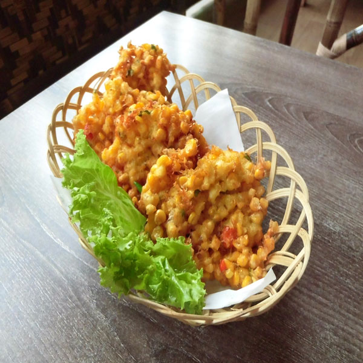
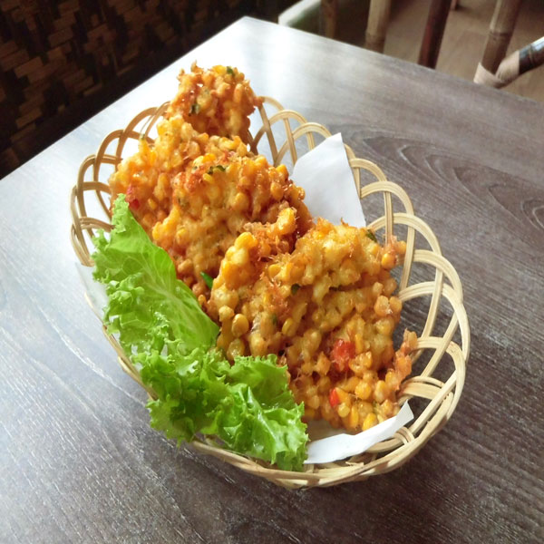

Image source

Image source
PERKEDEL JAGUNG
Bahan
- Biji jagung muda 180 gram
- Bawang putih 15 gram
- Bawang merah 25 gram
- Lada putih bubuk 1/2 Sdt
- Telur 1 butir
- Tepung 60 gram
- Garam 1 Sdt
- Daun bawang 150 gram
- Ketumbar bubuk 1/2 Sdt
Cara Pembuatan
- Campurkan jagung, bawang putih, bawang merah, lada putih bubuk, tepung, garam, daun bawang yang sudah di iris, dan ketumbar bubuk. Kemudian aduk sampai benar-benar merata.
- Setelah semua teraduk rata, kemudian Tambahkan telur. aduk sampai benar-benar merata.
- Panaskan minyak, lalu ambil adonan yang sudah teraduk rata dengan menggunakan sendok sebagai ukuran perbiji perkedel jagung, atau sesuai ukuran selera anda.
- Gorenglah adonan tadi dengan menggunakan api sedang atau kecil, agar kematangan perkedel jagung sempurna.
- setelah adonan perkedel jagung berwarna keemasan, angkat kemudian tiriskan.
- Selamat menikmati.
Keterangan
- Resep diatas adalah resep dasar perkedel jagung. Anda bisa berkreasi dengan cara menambahkan udang atau bahan favorit anda kedalam adonan perkedel jagung untuk memenuhi selera anda.
SOSIAL MEDIA KAMI
Silahkan berlangganan dan share sosial media kami untuk mendapatkan pemberitahuan